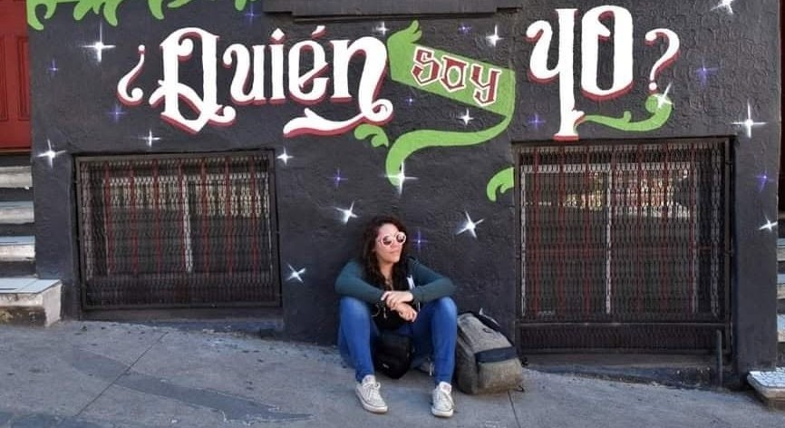

Somos un duo de escritores y periodistas que luchamos por encontrar voces nuevas en Latinoamérica para que sean leídas por todo el mundo.
¿Quiénes somos?


Kristel Freire
Es una artista y periodista ecuatoriana especializada en Derechos Humanos y en Post Producción Audiovisual, actualmente cursa la maestría de Lenguajes Artísticos Combinados en la Universidad Nacional de las Artes en Buenos Aires. Su poemario La benignidad de las penas, cómo volver infame a un criminal ganó el X Concurso de Poesía Joven Ileana Espinel Cedeño. Fue traductora literaria para PM Press de Nueva York y coordinadora del Espacio Cultural Estudio N en Guayaquil. Ha dirigido obras de teatro y performances. Trabajó como guionista en Bogotá y como periodista en Argentina. Es parte del colectivo de artistas feministas GritaLaMar, que produce obras con temática de violencia de género.
Ramiro Suero
Nacido en Buenos Aires, Argentina. Fue finalista del concurso de Poesía Ruinas Circulares. Autor de los libros de poemas Sinfonía para verdugos de buen corazón (Alción, 2023) y Los niños perdidos (Alción, 2024). Estudió los primeros años de psicología en la UBA, carrera que abandonó para dedicarse a escribir y a dar talleres de escritura creativa. Alumno de Pablo Ramos, Ignacio Apolo, Diego Paszkowski y Laura Yasán.